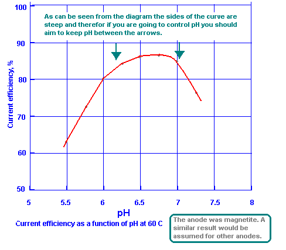

|  | In order to find out the optimum solution pH, the steady state current efficiency was measured using an experimental cell with a miniature magnetite anode in which the pH was measured every 10 minutes and maintained at desired levels between 5.5 and 7.25 by intermittently adding normal hydrochloric acid solutions. Figure 4 shows that a maximum efficiency is reached at a pH of 6.75, and the curve falls rapidly on either side of the maximum. |
| The effects of pH on the current loss due to Chlorine evolution (escaping out of cell I presume) and the steady state hypochlorite concentration are given in Fig 5, which indicates that the aforesaid optimum pH is also accompanied by a minimum current loss/wastage due to small amounts of Chlorine gas getting out of cell at the optimum pH and also the hypochlorite has not risen from its low value so that you will not get Chlorate being made from hypochlorite by electricity at the anode surface as this is considered a non ideal reaction as far as current efficiency is concerned. |
| This table shows the effect of pH control on current efficiency and acid consumption | |||
|---|---|---|---|
| Quality of pH control | pH drift | Current efficiency, % | 35% HCl consumed kg/ton - NaClO3 |
| Medium | 6.0 to 7.8 | 74.4 | 87.5 |
| Good | 6.7 to 6.8 | 84.5 | 62.5 |
HIT THE BACK BUTTON ON YOUR BROWSER